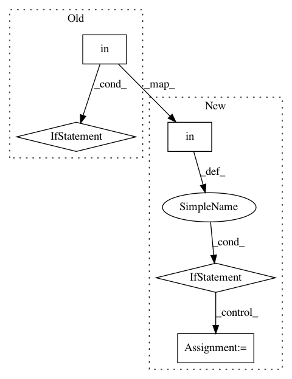

0d96f546e8512e200e3ad0e9bfe8a23b42a478bc,skbio/diversity/beta/_base.py,,beta_diversity,#,29
Before Change
raise ValueError(
"Number of rows in counts must be equal to number of provided "
"ids.")
if metric in _skbio_metrics:
metric = _skbio_metrics[metric]
if callable(metric):
metric = partial(metric, **kwargs)
distances = pdist(counts, metric)
After Change
raise ValueError(
"Number of rows in counts must be equal to number of provided "
"ids.")
if metric in _skbio_metrics:
if metric == "unweighted_unifrac":
metric, counts, _ = _unweighted_unifrac_pdist_f(
counts, otu_ids=kwargs["otu_ids"], tree=kwargs["tree"])
elif metric == "weighted_unifrac":
try:
normalized = kwargs["normalized"]
except KeyError:
normalized=False
metric, counts, _ = _weighted_unifrac_pdist_f(
counts, otu_ids=kwargs["otu_ids"], tree=kwargs["tree"],
normalized=normalized)
else:
metric = _skbio_metrics[metric]
elif callable(metric):
metric = partial(metric, **kwargs)
else:
pass
distances = pdist(counts, metric)
return DistanceMatrix(distances, ids)
pw_distances_from_table_deprecation_reason = (
In pattern: SUPERPATTERN
Frequency: 5
Non-data size: 5
Instances
Project Name: biocore/scikit-bio
Commit Name: 0d96f546e8512e200e3ad0e9bfe8a23b42a478bc
Time: 2015-11-09
Author: gregcaporaso@gmail.com
File Name: skbio/diversity/beta/_base.py
Class Name:
Method Name: beta_diversity
Project Name: recipy/recipy
Commit Name: 49667f36855ef08accc19640b03a9307caa69f59
Time: 2015-08-30
Author: florian.rathgeber@gmail.com
File Name: recipy/log.py
Class Name:
Method Name: log_init
Project Name: alexandrebarachant/muse-lsl
Commit Name: efaa4b898c5bba5c4530e0f629c426d707943b4a
Time: 2018-05-07
Author: morrisondano@gmail.com
File Name: muse-lsl/muselsl/muse_stream.py
Class Name:
Method Name: list_devices
Project Name: geomstats/geomstats
Commit Name: 2d00b7371a87b0a6a17de19d550e326db5cf15f3
Time: 2020-11-29
Author: nicolas.guigui@inria.fr
File Name: tests/test_backends.py
Class Name: TestBackends
Method Name: test_choice
Project Name: nilearn/nilearn
Commit Name: 0d42713d2e1e651f02e79896f4b8c849d25fdde2
Time: 2017-05-29
Author: gael.varoquaux@normalesup.org
File Name: nilearn/plotting/displays.py
Class Name: BaseSlicer
Method Name: _map_show